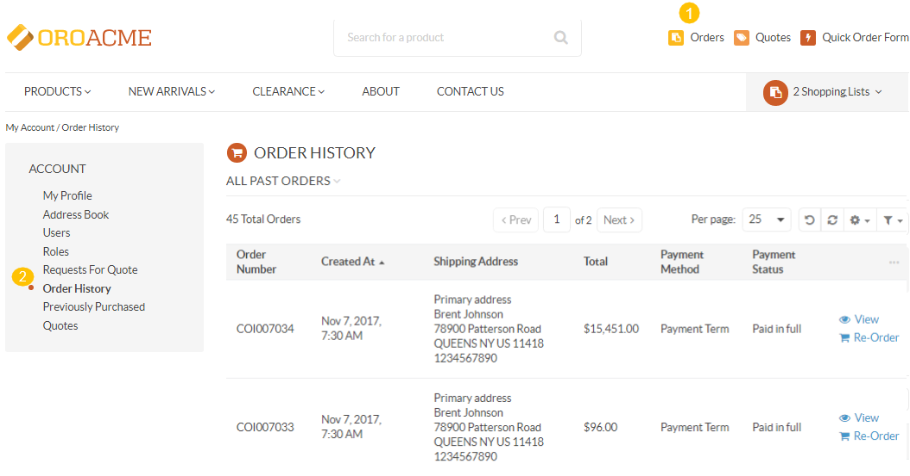
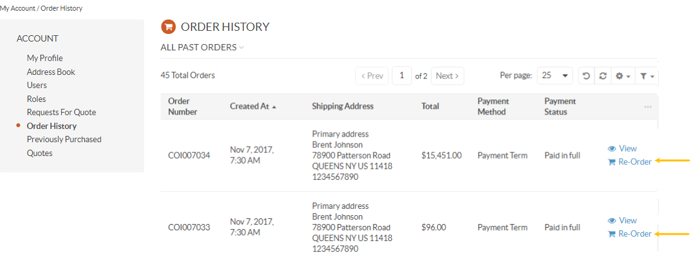
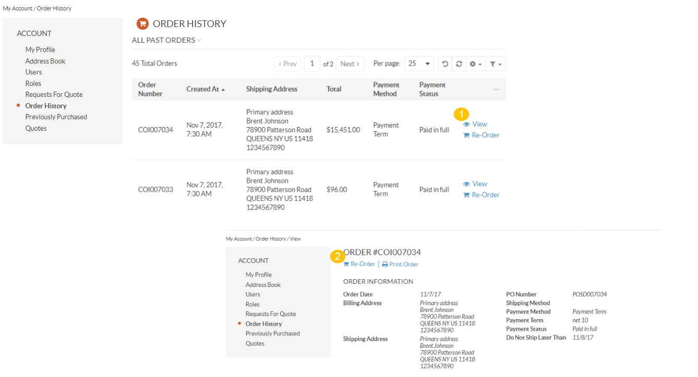
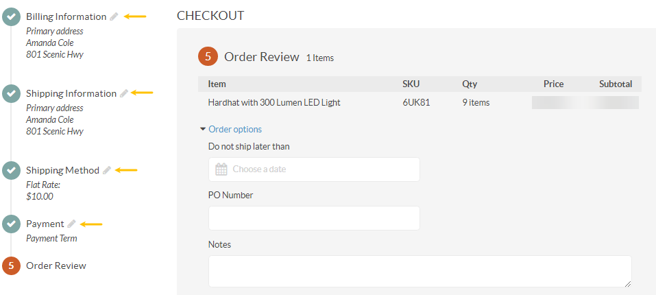
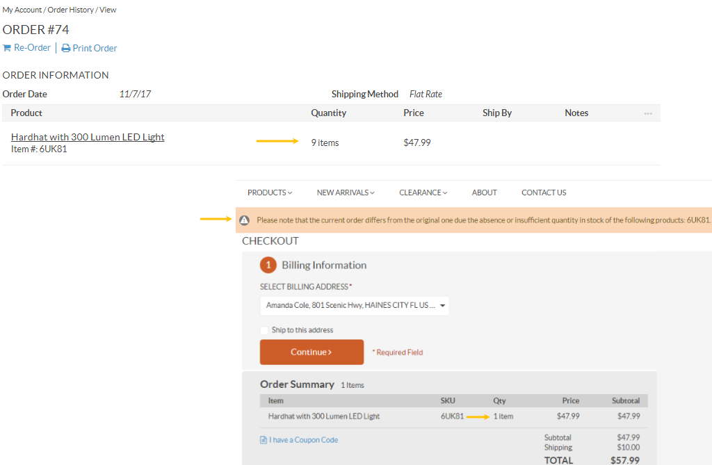

If you wish to place the similar or identical order to the one you have already submitted, there is a way to avoid a long product selection process and just copy the items from the original order.
The Re-Order option triggers a new checkout using the items from an existing order.
To proceed with re-ordering:
Navigate to Orders in the Quick Access Menu, or click Account and then click Order History in the git menu on the left.
Select the order which you want to re-order from the All Past Orders section. The section contains a list of all the orders submitted previously.
Click Re-Order on the right to open the Checkout page.
Alternatively, click View to check the details of the selected order, and then click Re-Order directly from its view page.
The Checkout page incorporates billing, shipping, and payment information provided by the customer in the original order.
In case any personal information has been changed, the customer can easily update it from the checkout page.
Note
As the product quantity may have changed since the time of the original order submission, a customer will be notified upon any differences occurred in stock.
